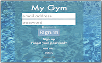

julian.wyatt@julesjam.com
07805 574707
07805 574707
Full Stack Developer Keen On MEAN
Hi. I am 'JulesJam'. My name is Julian Wyatt, you may ask why I have called my site 'JulesJam', it's a long story but Jam and Jam making seem to have popped up a number of times in my life and at one point I considered setting up a business making jam, however after one week of peeling oranges to make marmalade I began to think maybe that jam making was not the way forward! But I liked the name JulesJam which I had used for labelling and it kind of stuck...

I qualified as a registered Pharmacist in 1989 – I resigned from the register in 2016 to pursue a new career in technology. Throughout my Pharmacy career I have very much focused on using technology to improve and enrich the businesses I have worked for. From helping to implement early EPOS systems to working with developers on an interactive online Doctor site more recently working with Webstar-Health in their development of a site to enable communication between Community and Hospital Pharmacists.

Along the way I have taught myself Basic, DOS, QBasic, Visual Basic, Filemaker Scripting language, basic HTML, CSS, PHP and HL7. This year I was able to take time to undertake formal web devloper training with General Assembly, attending the Web Development Immersive course for 12 weeks through the summer of 2016. Over the 12 weeks we covered a whole host of the most up to date technologies, as listed in the education section of my site. I realise there is still alot to learn but now have a good formal grounding in web development. I am currently looking for a Junior Web Developer position in London.

To see my full emplyment and education history you can download my CV here or visit my LinkedIn Profile.

When I’m not undertaking an immersive coding course I keep myself busy with cycling, gardening, cooking, or travelling. I am also a keen but very much amateur photographer and so I usually like to combine all of these things by travelling to new places, if possible cycling around and trying the cuisine whilst taking photos. I am also very much interested in technology and science, I read New Scientist Magazine every week and bore my husband with Quantum Physics although this again is very much in an amateur way!

Here are the projects I have worked on.
The first four are projects which I created during the Full Stack Web Developer Course that I undertook at General Assembly. They are all pretty much minimum viable products and are not fully debugged.
I intend to return to these projcects, as time permits, to fix the bugs. I will be adding new projects very soon!
I like to work by starting writing some pseudo code, a user journey to describe the project or by making a list of points I want to include in the application. I now use Trello to record these points so that they become action points. Once I have what I feel is a relatively comprehensive list of points I like to build fully formatted wireframes - I use Omnigraffle for this. I find that this helps to identify issues with missing components and makes it easier to keep a vision of the end product in focus. Once the wireframes are complete I add to the Trello board creating blocks of tasks to achieve.
This process is still evolving but seems to work well.

Based on Scrabble, SCARBBLE was my first project built over 4 days. 2 players can play using regular scrabble rules. The game uses two API’s; one to check that words are valid and the other to speak the definition if speech is activated.
This was my first attempt at writing a full web applictaion and to use Javascript / jQuery. I had 4 days to build the app over a long weekend.
I am paticulalry pleased that the app uses a constructor function to build the board and two API's, at this point in the WDI course we had not covered API's so I was pleased to implement these myself.
If you currently try to play the game there is an issue with way in which the letter racks are currently auto-positioning but this can be fixed. The project was quite a challenge from a logic point of view as the scoring is a little more complex than I had originally anticipated, the app checks word validty using the Mashape Words API. Currently the logic will score words that cross over but there are some issues with the scoring words where the word starts or end with a letter that pre-exists on the board. On the last day of the project I found a better way to analyse the play for word intersections and re-wrote the logic for words intersecting on characters other than the first and last but still need to do this for other intersections - I intend to fix this in a re-write.
To play; the player in play clicks a letter on their rack and then clicks the square on the board where they want to play, letters can only be placed in playable squares. Whne the word is complete the player can click 'commit' to play the word. If there is no playable word the player can skip a turn and play passes to the other player.
If you click the speaker symbol at the top left of the screen then the word definitions will be converted to speech using the HTML5 Web Speech API. originally the app 'spoke' every letter that was picked up and put down - currently most of the seech options are turned off as during development they were becoming somewhat annoying!!

Built using Ruby on Rails, this was a first Ruby project. The application was inspired by a friend who owns a gym and wants to rebuild their web site. This application was built as a proof of concept whilst fulfilling the brief of building an authenticated Ruby on Rails application.
Some key points were: to have some means of generating a user membership card which could potentially be used as an entry key, for this I considered looking at nfc but with only 7 days from concept to completion this would have been too much of a challenge so I opted on generating a QR code using the rqr-code GEM. This could potentially be read by a qr code reader linked to an automated lock...an interesting future project.
A photo gallery was something that 'the client' was interested in so I added the Carrierwave GEM, this was then also used to add user images.
As a challenge I thought it would be useful to have a means that trainers could communicate with their clients using a chat module within the application so there is also websocket based chat.
Bugs!This is very much MVP and currently the app on Heroku does have a number of bugs. If you would like to test this further please fork a copy from my GitHub, as with all my projects from WDI I intend to re-visit MyGym to work on fixing the bugs now that I have completed the course.
This was the first group project on the General Assembly Web Development Immersive course which enabled us to explore a different way of working. Working as a team enabled us to use Git and Git Hub in a collaborative fashion.
The scope of this project was to use a MongoDB database and to utilise at least one API to produce an application. After much consideration my team decided to build a version of Risk. Having decided how to divide the work between each of the team members we started work building a module using the Google Maps API and Fusion Layers. Unfortunately we discovered, after almost 3 days of coding, implementing Fusion Layers in the way that we wanted to would take considerably longer than we had available and so we had to make the decision to scrap 2 days work and start again.
The final project was a two player game based on the Jules Verne story of Around The World In Eight Days the application utilises Google Maps API and the RestCountries API.
The game starts in the UK in honour of the Jules Verne book "80 Days Around the World", though this could be set to any country in the world.
At the start of the round the player has to decide which country to travel to next. The player may choose between all the UK's neighbour countries. Player two starts after player one has selected a country and can chose all the neighbouring countries apart for the one selected by Player 1.
As aforementioned, the aim of the game is to return to the UK in less than 80 clicks touching all the continents. Once one player visits a country the other player is able to visit it and has to find a way around.
The game ends if: 1) One of the two players returns to the UK. 2) When one of the to players exceed the 80 clicks. 3) One of the two players remains blocked in a country (no neighbour countries available).
For the project I worked with Antonio Rossi and Chetan Barot and it is our intention to look at developing this game further as we believe it has some educational potential.
An authenticated web app where users can build a profile, users are then shown on a map, other users can interact with live chat. If users choose to eat, local restaurants are listed from Zomato.
This was the final project for the General Assembly Web Development Immersive course, the scope was to use the MEAN stack and at least two API's.
I decided to utilise the Google Maps API and Zomato's restaurant API to create and app enabling users to find other people who would like to meet up to eat. The application is authenticated using BCrypt or Oauth through Facebook. Once autheticated users are shown on a map or in table format. Users can chat to each other using websocket chat, the chat is deliberately not saved as one key factor was not to store huge amounts of personal information.
The Google Maps reverse geocoder was used to identify locations of users from just a town name and the Zomato API then generates a list of local cuisines, the aim being to then extend this to show restaurants based on the selected cuisine on the map of users
Bugs! Chat on the version on Heroku is not currently working and needs to be fixed. The app should identify users with similar tastes but that has not yet been implemented. The intention is to work on these bugs to fix them now that the WDI course is over.
If you have already read the 'Who is..' section of my site you will know that I completed the Web Development Immersive at General Assembly in London. The course covered a wide gamut of technolgies but in addition to learning new languages and frameworks the course also taught me how to work using Agile principles including daily stand-up review meetings, the benefits of wire framing and using planning boards.
These are the technologies which I have worked with to date....
Whilst I have worked with all of the above there is plenty more to learn and I am always keen to work on developing my knowledge either of my exisiting skills or to take on new ones. I also have some leaning towards backend technology and skills.